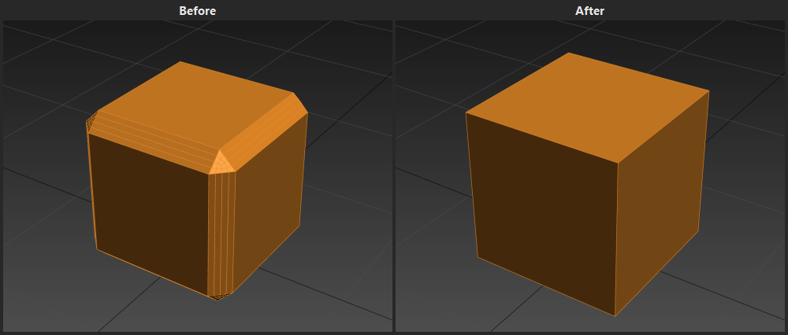
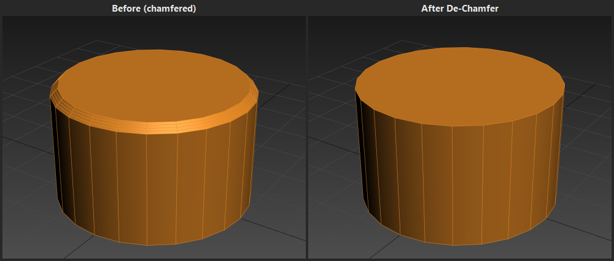
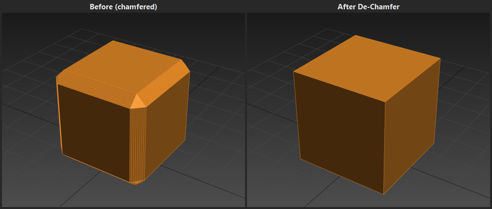
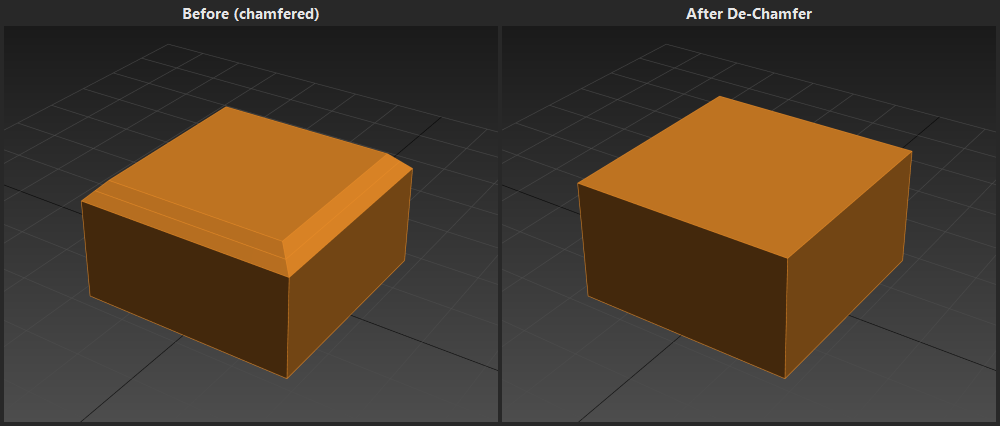

Tools / De-Chamfer
De-Chamfer
Turn chamfer strips back into sharp edges.
What it does
De-Chamfer undoes a chamfer. Select the strip of polygons the chamfer made, and it collapses them back into one sharp edge, with the neighbouring polygons meeting again at the original corner.

How to use it
- Go to polygon or element level of an Editable Poly (or an Edit Poly at the top of the stack) and select the chamfer strips.
- In the right-click menu, choose De-chamfer (right after Chamfer).
- The strip collapses at once.



Good to know
- The neighbouring polygons keep their own smoothing groups, material IDs and UVs.
- New edges that come out sharp (about 30 degrees or more) between polygons of the same smoothing group are made hard.
- It also puts back corners on curved bodies and on a chamfer that stops partway along an edge.
- If the selection does not look like a chamfer strip, you get a message and nothing changes.
- Undo is one step.